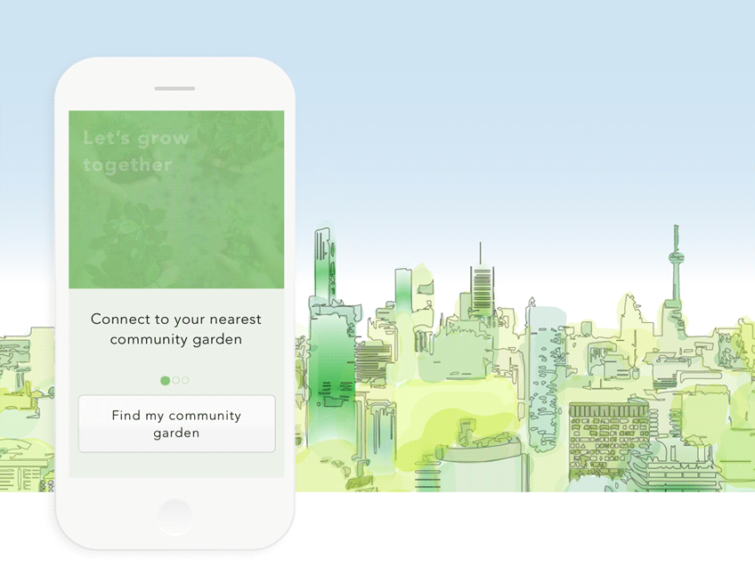

Toronto Urban Gardening
Web app community platform
Comprehensive research and development of a conceptual online platform to support citizens in creating community gardens.
user research, product development, user interface learn more
Running With Sh*tty Feelings
ProtoHack 1st place app concept
A conceptual running app bringing awareness and attention to men's mental health.
user research, user profiles, user flows learn more
Blue-Faced Leicester Wool
Branding
A walk-through of the steps to building and marketing a brand.
user interface, product development, marketing learn more